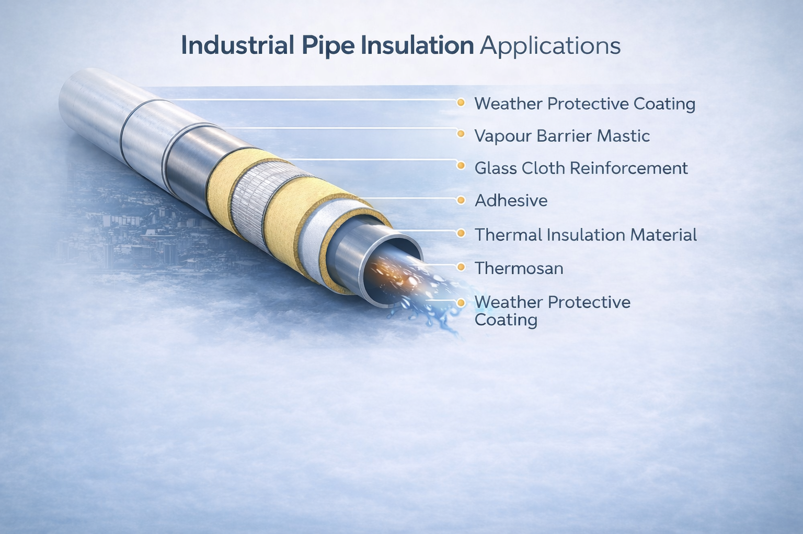
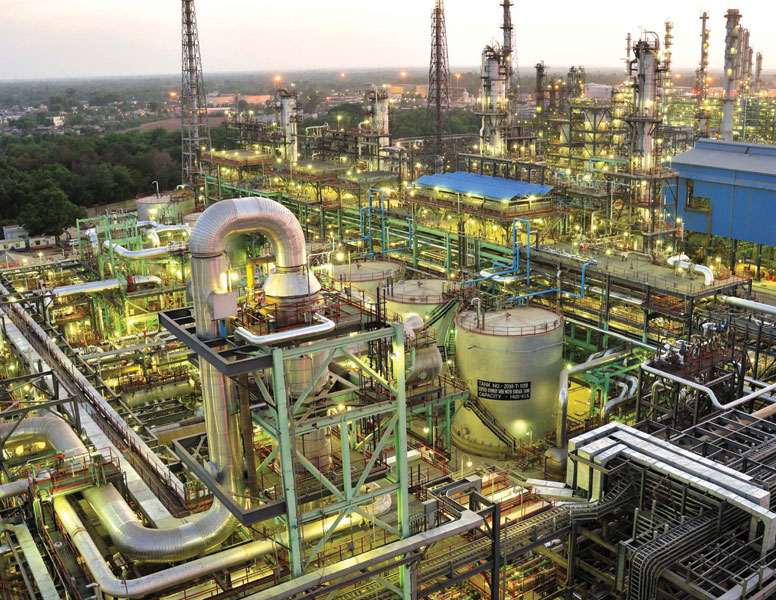
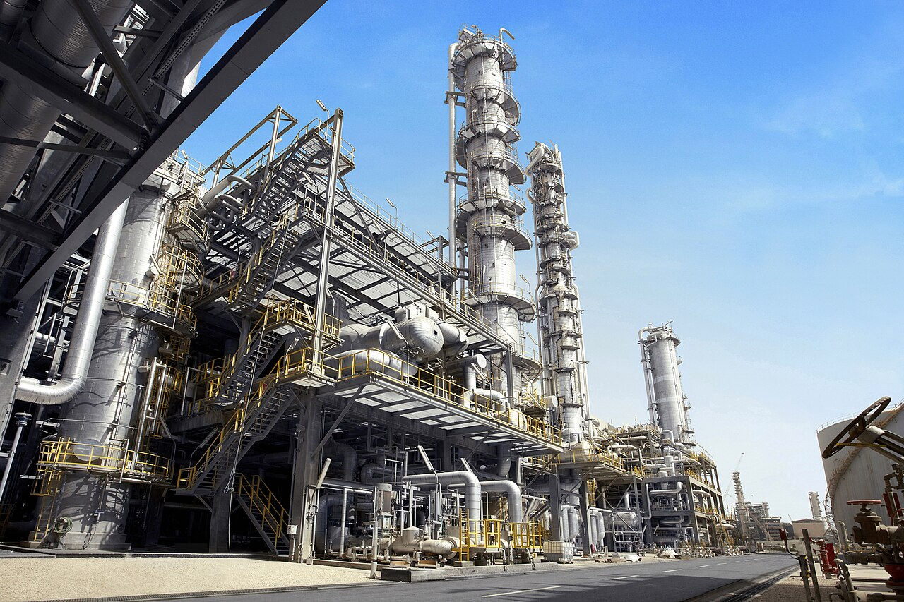
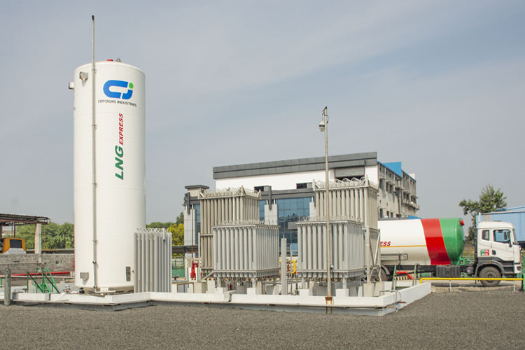
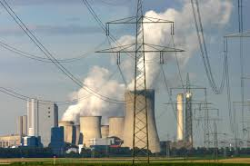
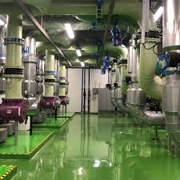
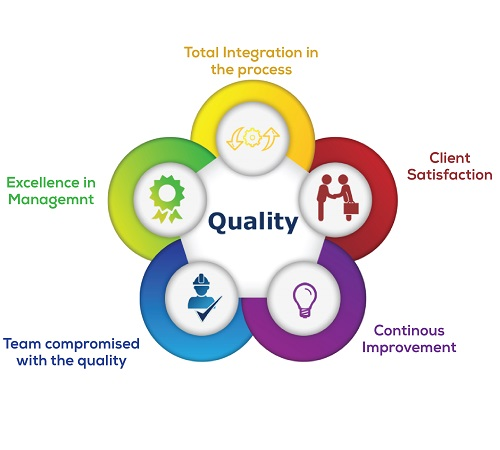

Capricorn Coatings & Colours
Capricorn Coatings & Colours is a manufacturer of thermal insulation accessory materials designed for demanding industrial environments. Our product range includes mastics, adhesives, sealants, protective coatings, bituminous compounds and specialized insulation materials used in thermal insulation systems across critical industries.
For decades, our materials have supported refineries, petrochemical plants, power stations, LNG terminals, HVAC networks and cryogenic facilities, helping insulation systems perform reliably under challenging service conditions.

Capricorn in Numbers
30+
Years of Industry Experience
50+
Industrial Insulation Products
100+
Industrial Projects Supported

Our Product Expertise
Capricorn manufactures a wide range of insulation support materials including:
- Vapour barrier mastics
- Fire resistant mastics
- Industrial adhesives for insulation fixing
- Joint sealants and vapour barrier sealers
- Protective and weather barrier coatings
- Bituminous waterproofing compounds
- Butyl tapes and specialty sealing materials
- Other specialized thermal insulation accessory materials
Each product is engineered to ensure strong adhesion, long-term durability, and reliable vapour barrier performance in both hot and cold service insulation systems.
Industries We Serve

Oil & Gas Refineries

Petrochemical Plants

LNG & Cryogenic Facilities

Power Generation Plants
Chemical Processing Units

HVAC Systems
Commitment to Quality
At Capricorn Coatings & Colours, quality begins with careful raw material selection and controlled manufacturing processes. Our products are designed to meet the practical requirements of insulation contractors, engineers and plant operators.
Many of our materials align with internationally recognized testing standards such as ASTM performance specifications, ensuring reliable performance in industrial insulation systems.
Every batch is produced with strict attention to consistency, durability and field performance, ensuring that our customers receive dependable products for critical applications.

Our experience in insulation materials allows us to understand the real challenges faced by contractors and engineers in the field. Capricorn products are developed not just in laboratories but with a strong focus on ease of application, workability and long-term protection of insulation systems.
Whether the requirement is vapour barrier protection for cold insulation, fire resistant coatings, or bituminous waterproofing systems, Capricorn materials are designed to provide practical solutions that perform in real industrial environments.
Standards & Certifications
Capricorn Coatings & Colours products are designed to align with internationally recognized testing and performance standards used in industrial insulation systems.
ASTM Standards
Performance aligned with ASTM testing specifications.
Quality Focus
Consistent manufacturing and quality control processes.
Industrial Testing
Materials designed for demanding plant environments.
Field Proven
Reliable performance across industrial insulation systems.
Our Mission
To provide reliable thermal insulation accessory materials that help industries protect their assets, improve insulation performance, and extend the service life of critical equipment.
Our Vision
To be recognized as a trusted manufacturer of industrial insulation support materials, known for product reliability, practical engineering solutions and long-term customer relationships.